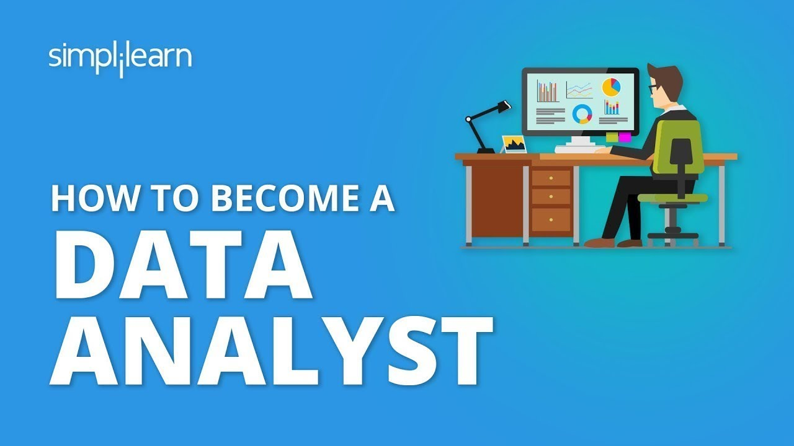

Đòn bẩy tạo thu nhập 8 chữ số sau 6 tuần.
Khi mình bắt đầu mình hoàn toàn bắt đầu từ con số “0”.
Bạn là sinh viên trái ngành, người đi làm trái ngành, hay một freelancer hoàn toàn có thể làm được
Mình không có bất cứ bằng cấp nào về DA
Mình và các bạn cũng đã từng trãi qua giai đoạn phải ở nhà suốt ngày vì giãn cách xã hội do dịch bệnh covid-19

Nếu bạn sở hữu một kỹ năng có thể giúp bạn kiếm tiền tại nhà…
Bạn sẽ không cần phải lo lắng gì cả.
Vì bạn hoàn toàn có thể kiếm được nhiều tiền dù có giãn cách xã hội
Bạn có thể làm việc như freelancer nếu bạn muốn
Dùng nó để phát triển chiến lược marketing nếu bạn là một nhà kinh doanh
Và kỹ năng mình muốn nói đến chính là DA
Phân tích dữ liệu
Và có thể nói, đây là kỹ năng có tính ứng dụng cực cao
Và hoàn toàn có thể đem lại cho bạn thu nhập 8 chữ số
Thẩm chí bạn ngồi ở nhà để làm việc…
Kỹ năng này giúp mình có thu nhập 8 chữ số, tin được không?
Thu nhập thấp nhất một tháng của mình hiện tại là 2000$ / tháng.
Có những tháng mình có thu nhập hơn 5000$/tháng.
Và mình chỉ làm việc 5 ngày trong giờ hành chính và thêm 10h/ tuần vào những thời gian nghĩ khác.
Và mình hoàn toàn làm duy nhất một việc duy nhất là Data Analytic
Bên cạnh đó…
Và mình còn giúp dự án kinh doanh của bạn mình X2 doanh thu chỉ trong vòng 2 tuần.
Giá trị của nó tạo ra còn lớn hơn công việc bạn làm
Do đó tai sao mà thu nhập từ DA lại cao
Nếu bạn có thể làm cho doanh thu của một doanh nghiệp tang gấp đôi
Thì việc họ trả cho bạn vài ngàn thẩm chí hơn 10 ngàn đô là chuyện bình thườn
Cái này khó lắm, không phù hợp với mình.

Ngày mình biết đến DA, mình cũng nghĩ như bạn vậy.
Mình lo sợ, người ta làm được, chưa chắc mình đã làm được
Nhưng mình vẫn nhớ một câu nói rất nổi tiếng : “If you believe you can or think you can not either way, you are right!”
Và mình đã quyết tâm học nó, và mình đã thành không.
DA thật sự không hề dễ
Nhưng …
Nó không khó bằng việc bạn vượt qua rào cản của chính bản thân chúng ta
Nếu bạn làm được thì bạn sẽ thành công.
Ngày mình bắt đầu.
Zero … zero … zero
Không kiến thức marketing
Không kiến thức về dữ liệu
Không biết gì về lập trình
Không hiểu nổi con số đó đang nói gì
Tất cả chỉ là con số 0 khi mình bắt đầu.
Thứ gì nhất mình có : “Là niềm tin vào tương lai, và năng lực của bản thân.”
Là mình hoản toàn có thể làm được.
Và đó là thứ mà ai cũng có nó.
Và rồi mình đã thành công.
Thời kỳ covid covid-19 dãn cách xã hội mình không thể kiếm nổi 200k/tháng
Dịch bệnh đến bắt ngờ
Dãn cách xã hội …
Mất việc, ở nhà suốt ngày
Tiền thì không đủ sống
Mình chỉ có một ước mơ: “ Kiếm được 20 triệu 1 tháng ”
Ngoài ra mình chẳng có gì cả.
Trước đó,
Mình là một kỹ sư vật liệu
Mình làm trong 1 xưởng in.
Lương 9,6 triệu / tháng.
Nghe có vẻ là cao
Uk thì cao thật, nhưng mình làm việc 12h/ngày
6 ngày / tuần
Và mình làm việc giống một công nhân hơn là 1 kỹ sư
Đi làm thì bị sếp mắng.
Về nhà thì lo lắng ngày mai có bị đuổi việc không
Tháng này có kiếm đủ tiền để lo cho gia đình
Không biết ngày mai có bị sếp mắng hay không
Lỡ mai ông đuổi việc mình rồi sau.
Sống tiết kiệm từng đồng.
Đi làm ốm bệnh không dám nghĩ
Mình nhớ lúc đó lương mình còn thấp hơn 1 số công nhân khác
Mình cũng cố gắng vượt qua, nhưng rồi…
Dịch bệnh đến
Và thế là hết , mất việc, không có tiền và không thể làm gì.
Cơ may đã đến với mình.
Và mình biết đến DA.
Và mình danh nhiều thời gian để nghiên cứu về nó.
Và mình khẳng định được:
Đây là kỹ năng giúp mình có thể thay đổi cuộc đời của mình
Cuộc đời mình đã thay đổi từ đó.
Làm ít hơn …
Số tiền kiếm được nhiều hơn…
Thẩm chí chỉ cần ngồi ở nhà vẫn làm được.
Mình vừa là người làm fulltime
Vừa làm thêm các công việc như các bạn Freelancer/p>
Và nhờ vào DA, mình đã nhận ra một góc nhỏ của thị trường
Và mình cũng đã kinh doanh thành công với dự án này.
Tất cả đều nhờ vào DA.
Mình còn giúp được nhiều người kinh doanh thành công.
Nhờ vào việc DA.
Mình đã giúp nhiều doanh nghiệp tìm ra được chỗ sai của họ
Nhiều nhà kinh doanh nhỏ lẽ có được đinh hướng cụ thể về chiến lược
Họ xác đinh đúng được khách hàng của mình
Kinh doanh được sản phẩm đúng nhu cầu thị trường.
Thì không gì mà không thành công nếu biết được những yếu tố này
Và mình cũng nằm trong số đó
Và nếu bạn chỉ đơn giản là một nhà kinh doanh nhỏ lẻ hay một chuỗi cửa hàng lớn, một người có ý đinh kinh doanh. DA hoàn toàn có thể giúp bạn X2 doanh thu của mình
Nghe có vẻ như một trò đùa…
Nhưng! Việc phân tích được nhu cầu thị trường
Nhu cầu khách hàng
Thời gian, địa điểm, giá cả
Những thiếu sốt, sai lệch trong kinh doanh
DA sẽ giúp bạn nhận ra nó chỉ trong vòng 10 phút đọc báo cáo
Học data analytics tốn rất nhiều tiền
Mình vẫn nhớ khi mình bắt đầu, mình phải mượn tiền thằng bạn mình để học DA…
Lúc đó dịch bệnh mà học tốn rất nhiều tiền
Không chỉ DA mà mình còn phải học về Marketing
Mà bạn biết đấy, học về marketing thì chưa bao giờ lẻ rẻ cả
Nhưng …
Bạn không cần phải giống mình
Bạn không cần phải bỏ ra nhiều tiền như mình
Trước đây, chi phí học của mình có thể lên đến gần 50 triệu
Và mình hiểu đó không phải là con số mà ai cũng có thể bỏ ra
Nên trong gần 1 năm vừa qua
Mình vừa làm việc, vừa cố gắng tạo nên…
Một khóa học về DA cho các bạn
Với mức giá phù hợp nhất
Để các bạn có thể tham gia mà không phải bỏ ra quá nhiều tiền
Và mình đã hoàn thành khóa học này
Nếu bạn là muốn trở thành một data analytic, một nhà kinh doanh muốn tang thu nhập, một Freelancer hay chỉ đơn giản là một người muốn kiếm thêm thu nhập vào thời gian rảnh:
\Minh xin giới thiệu với bạn:
Khóa học Data Analytic 8 numbers 6 weeks – Thu nhập 8 chữ số sau 6 tuần
Bạn không cần phải giống như mình bỏ ra quá nhiều tiền để học nhiều khóa học nữa
Bạn không cần bỏ thêm tiền để học thêm kiến thức marketing
Và bây giờ bạn đã sẵn sàng …
Bởi vì những gì bạn cần biết…
Để trở thành một DA
Mình đã đóng gói cho bạn trong toàn bộ khóa học này
Và mình chắc chắn rằng nếu bạn làm đúng những gì mình nói
Bạn sẽ thực sự trở thành một DA thực thụ
Có được thu nhập như mình
Thẩm chí còn nhiều hơn như vậy, nhiều hơn mức thu nhập hơn 60 triệu / tháng
Song song đó, nếu bạn đang kinh doanh, bạn hoàn toàn có thể thây đổi doanh số
Ít nhất là gấp 2 lần
Mình phải làm việc gần 12h một ngày trong vòng gần 1 năm để tạo ra khóa học này
Tại sao phải làm việc nhiều như vậy
Nếu chỉ cần tổng hợp kiến thức
Thì mình chỉ mất khoảng 6 – 7 tháng
Nhưng, thứ mình muốn là các bạn dù là …
Yếu nhất, hay giỏi nhất
Đều có thể học được
Mình đã xem đi xem lại những video…
Rất nhiều lần mục đích chủ yếu
Để làm sao cho nó dễ hiểu nhất
Và mình đã nghiên cứu rất nhiều phương pháp
Để tạo nên sự thu hút nhất
Thứ mình thật sự muốn
Những bạn tham gia khóa học này
Có được kết quả tốt nhất
Và hoàn toàn tạo ra được thu nhập
Mình sẽ được học gì trong khóa học này vậy T.G. Nguyễn
Nội dung khóa học sẽ bao gồm 8 phần và bạn có thể hoàn thành nó trong vòng 6 tuần
Nếu bạn học xong 8 phần này bạn sẽ kiếm được tiền
Phần 1: Self growth – Nếu không có nó, chắc chắn bạn không bao giờ thành công được
Rất ít khóa học trên thị trường hiện này có được nội dung này
Nhưng nó chính là …
Yếu tố quyết định 90% sự thành công của bạn
1. Thói quen tốt bạn cần rèn luyện
Nếu bạn bỏ qua nó, bạn học 10 khóa DA khác nhau cũng không thành công được
2. Chuẩn bị để bước vào khóa học
3. Tinh tưởng vào bản thân, không gì là không thể
4. Những sai làm mà các bạn hay mắc phải khi bắt đầu
5. Các hướng kiếm tiền từ DA
6. Định hướng tìm việc cho Freelancer
7. Định hướng cho người đi làm
8. Định hướng cho người kinh doanh sản phẩm
Phần 2: Marketing và những kiến thức cần thiết về marketing
1. Marketing là gì?
2. Những điều cần nhớ về marketing cho DA
3. Kiến thức marketing chuyên sâu
4. Áp dụng marketing vào phân tích dữ liệu như thế nào
5. Đọc số liệu từ marketing online
6. Phân tích marketing trên các sàn thương mại điện tử
Phần 3: Cài đặt công cụ và hướng dẫn lập trình cơ bản
1. Cài đặt Python và Sublime text
2. Cài đặt các thư viện python
3. Các kiểu dữ liệu trong python
4. Vòng lặp trong thư viên python
5. Câu điều kiện
6. Tư duy lập trình phân tích dữ liệu
7. Hướng dẫn sử dụng chuyên sâu thư viện numpy
8. Hướng dẫn sử dụng chuyên sâu thư viện pandas
9. Cài đặt và sử dụng SQL
10. Sử dụng SQL cơ bản
11. Cài đặt và sử dụng POWER PI cơ bản
Phần 4: Tông quan về dữ liệu và cách đọc dữ liệu
1. Dữ liệu, cơ sở dữ liệu, hệ quản trị cơ sở dữ liệu.
2. Đâu là yếu tố cần phân tích
3. Dữ liệu rac và dữ liệu cần phân tích
4. Đánh giá dữ liệu đã phân tích như thế nào
5. Bài tập đánh giá dữ liệu
6. Hướng dẫn giải bài tập
Phần 5: Làm sạch dữ liệu
1. Làm sạch dữ liệu là gì
2. Tại sao phải làm sạch dữ liệu
3. Thế nào là dữ liệu sạch
4. Các bước làm sạch dữ liệu
5. Làm sạch dữ liệu thông qua python
6. Làm sạch dữ liệu với POWER PI
7. Làm sạch dữ liệu chuyên sâu
8. Kiểm tra độ sạch của dữ liệu
9. Chia tách dữ liệu
10. Tổng hợp dữ liệu
11. Bài tập về nhà
12. Chữa bài tập về nhà
Phần 6: Tìm dữ liệu?
1. Tại sao lại học nó sau làm sạch dữ liệu?
2. Tìm dữ liệu ở đâu?
3. Cách lấy dữ liệu.
4. Một số mẹo lấy dữ liệu
5. Kỹ thuật Bright spot "chọn là trúng"
6. Bài tập về nhà
7. Chữa bài tập về nhà
8. Kinh nghiệm thực chiến
Phần 7: Phân tích dữ liệu. Rất quan trọng
1. Dữ liệu đưa vào phân tích sẽ có đặc điểm như thế nào?
2. Chọn nội dung phân tích
3. Phương pháp Speed data
Đây là phương pháp giúp bạn có thể nhận định và phân tích dữ liệu siêu nhanh mà mình đã tự đúc kết và áp dụng nó.
Mình có thể hoàn thành các dự án nhanh hơn các anh chị có nhiều năm kinh nghiệp nhờ nó rất nhiều
4. Phướng pháp hosting DATA
Đây là phương pháp giúp bạn có thể truy suất lại dữ liệu một cách nhanh nhất.
Trong quá trình làm việc với số liệu lớn, việc gây lẫn lộn số liệu là chuyện rất dễ xảy ra.
Với phương pháp này nó hoàn toàn có thể giúp bạn giải quyết vấn đề này một cách nhanh nhất.
5. Kiểm tra, điều chỉnh hoàn thiện số liệu phân tích.
Phần 8: Tổng hợp số liệu phân tích và tiền hành trực quan hóa dữ liệu.
1. Các bước tổng hợp
2. Trực quan hóa với power PI
3. Trực quan hóa với Python
4. Hướng dẫn đọc và đánh giá các số liệu
5. Bài tập thực hành
Tóm lại, đó là những gì bạn sẽ học được trong khóa học
Nếu bạn thật sự chăm chỉ, làm theo hướng dẫn của mình
Bạn sẽ kiếm được thu nhập 50 triệu/ tháng
Nghe thì hay đấy nhưng chỉ học thôi làm sao có kiến thức thực tế…
Kakaka ...
Rất hay cho ý kiến này
Nhưng mình đã chuẩn bị cho các bạn
Những bài tập mình đưa ra đa phần là những dự án mình làm
Và sau khi học xong kiến thức mình sẽ cùng bạn thực chiến một dự án
Không chỉ là lý thuyết đơn thuần
Không còn là bài tập từng phần
Bạn sẽ cùng mình làm một project thực thế
Và mình sẽ sửa 1:1 với bạn
Chỉ cho bạn cách áp dụng các mẹo đã học trong khóa học
Song, bạn còn nhận được bộ bài tập 49g hơn 10 project để tự luyện sau đó
Có như vậy bạn mới thật sự giỏi và làm được việc tại các công ty sau này
Nhưng T.G. Nguyễn ơi, mình không có nhiều thời gian để học thì phải làm sao?
Chuyện nhỏ …
Khóa học này, bạn muốn học lúc nào thì học
Mình không giới hạn thời gian
Dù bạn có vất vả với công việc kinh doanh
Dù bạn là một sinh viên suốt ngày phải đi làm thêm
Hay suốt ngày phải chạy deadline khi bạn là một người làm công
Nhưng chỉ cần mỗi ngày bỏ ra một ít thời gian
Bạn sẽ không còn phải vất vả như vậy nữa
Bạn có thể học khóa học này vĩnh viễn
Bạn đừng nhìn khóa học này quá dài hay nó quá ngắn
Nó không chỉ là khóa học đơn thuần
Đó là toàn bộ kình nghiệm 3 năm của mình đã đúc kết được
Đúng vậy …
Tất cả được gói gọn trong nó
Nội dung tốt đấy, nhưng mình không biết gì thì học được không?
Nghe câu này nhiều mà ngán …
Mình cũng bắt đầu từ con số 0
Và mình có chuẩn bị cho những bạn chưa biết gì
Sau khi xem xong phần này
Bạn chưa biết gì về DA bạn cũng có thể học được và trở thành MASTER
Tiếng anh như tiếng vịt mình có học được không
Tất nhiên là được rồi…
Mình dạy mình nói bằng tiếng Việt mà
Kkk…
Nếu thị trường bạn ở trong nước, thì đây hoàn toàn có thể
Nếu bạn muốn vương ra nước ngoài
Thì bạn cần phải có tiếng anh
Đặc biệt nếu bạn muốn trở thành Freelancer
Làm việc với người nước ngoài
Tiếng anh thật sự cần thiết
Còn trong khóa học…
Những thuật ngữ tiếng anh Chuyên ngành DA
Mình đã giải thích rất chi tiết và tất cả các trường hợp
Khóa học này không dành cho ai
Nếu bạn là người chấp nhận số phận hiện tại
Không muốn thay đổi thu nhập
Học cho vui
Học để khoe khoang
Mình tạo ra khóa học này, không phải với mục đích muốn đông người vào học để kiếm tiền
Mình muốn giúp các bạn có thể kiếm tiền
Nếu nhưng bạn nào không nghiêm túc
Không cố gắng, không xác định rõ bản thân mình muốn hay không
Thì đây không giành cho bạn
“Mình hiểu hết rồi, vậy học phí khóa học này là bao nhiêu vậy?”
Ngày từ bắt đầu xây dựng khóa học…
Mình đã muốn nó có mức giá phù hợp
Để tất cả mọi người điều có thể tham gia
Đó không phải là 20 triệu như nhiều khóa học về DA trên thị trường
Nó cũng không phải 15 triệu
Không phải 10 triệu
Đây là khóa học DA rẻ nhất thị trường
Bạn chỉ đầu tư 4tr999k
Đúng vậy!
Chỉ 4tr999k.
Bạn sẽ sở hữu nó
Quá tuyệt với đúng không các bạn
“Tuy nhiên, điều tuyệt vời chưa dừng lại ở đó…”
Nếu bạn tham gia khóa học ngay bây giờ
Bạn sẽ tiết kiệm hơn nữa!
Vì khóa học chưa đạt mức giá gốc
Nếu đạt 3000 người tham gia nó sẽ trở về giá gốc
Và sau khi đạt 3000 người thì cứ 100 người đăng ký mức giá lại tăng thêm 150k
Và mức giá bây giờ bạn phải trả
Chỉ là 3tr499k …
Chứ không phải 4tr999k nữa
Và bây giờ đã có hơn 2700 bạn đã tham gia khóa học này
Với mức giá này, nhiều người nghĩ…
T.G. Nguyễn chắc bị lú rồi
Bởi vì so với nhiều khóa học DA trên thị trường kể cả trong nước và ngoài nước
Thì nó thật sự quá rẻ
Và quá rẻ với những gì mà khóa học này mang lại cho bạn
Nhưng mình khẳng định với các bạn
Mình vẫn để mức giá này
Bởi vì như ban đầu mình có nói
Mình muốn ai cũng có thể tham gia
Ai cũng có thể thay đổi cuộc đời của của họ ít nhất là như mình
Nếu bạn còn trần trừ.
Lần sau bạn quay lại, đôi khi nó không còn được mức giá này nữa.
“Chưa dừng lại ở đó, ưu đãi còn nữa với 3000 bạn đầu tiên”
Với 3000 đầu tiên, tạo cho bạn 1 group riêng
Để khi bạn bắt đầu làm việc với dự án thật
Mình sẽ giúp các bạn sửa 2-3 dự án đầu tiên
Mình để con số 3000 vì mình cần làm nhiều dự án, nên mình không có nhiều thời gian để giúp tất cả các bạn
“Nhanh lên, sắp 3000 rồi, đăng ký thôi”
Nếu bạn muốn đăng ký hãy đền vào form dưới đây
Đừng quên, cứ đạt 3000 người sẽ không có ưu đãi như thế này đâu nhé
Tương lai, cuộc sống mới đang chờ bạn
Hãy cứ nghĩ xem.
Mỗi buối sáng thức dậy.
Uống 1 ly cà phê.
Ngồi vào bàn làm việc tại nhà.
Làm bất cứ thứ gì mình muốn
Không sợ ai có thể đuổi việc
Nhưng tiền vẫn về với mình
Hay muốn đến công ty làm việc, nhưng không phải lo lắng mình sẽ bị đuổi việc
Thu nhập 8 chữ số 1 tháng
Nhưng lại không phải quá vất vả như bây giờ
Hay bạn là nhà kinh doanh, mỗi ngày đơn hàng tăng vọt
Chi phí quảng cáo tiết kiệm đến 70%
Không phải đau đầu với chiến lược marketing
Ngồi ở nhà vẫn có tiền ………
Trong khi rất nhiều người phải vất vả mỗi ngày đi làm với nỗi lo toang cuộc sống
Bạn có thể đi du lịch và kiếm ra nhiều tiền với chiếc laptop mang thôi
Vừa chơi vừa làm việc
Chỉ cần vào phân tích một dự án, chi phí cho chuyến đi hoàn toàn có thể chi trả hết
“Nghe có vẻ khó tin quá, như một cách làm giàu nhanh”
Nếu mình là các bạn, mình cũng nghĩ như vậy
Mình biết trên thị trường hiện này, rất nhiều khóa học…
Nghe thì có vẻ rất hay, nhưng học thì chẳng ra gì
Cuối cùng người học thì mất tiền, nhưng lại không thu được kết quả
Nhưng như mình đã nói ban đầu
Mình tạo ra khóa học này là muốn các bạn có thể làm được chứ không phải học cho vui
Mục đích của mình là muốn giúp các bạn
Có được sự thay đổi tốt nhất trong cuộc sống
Nên các bạn cứ yên tâm
Mình rất ghét các khóa học tạo ra chỉ để kiếm tiền
Và để đảm bảo được điều đó
Mình sẽ hoàn lại 100% số tiền sau 2 tuần nếu bạn học thấy không phù hợp và không như những gì mình nói
Trong vòng 2 tuần,
Bạn phát hiện khóa học DA rẻ hơn, chất lượng hơn khóa học của mình
Bạn cảm thấy nó không phù hợp
Nó không như những gì mình nói
Mình sẽ hoàn lại cho bạn số tiền
Mình đã bỏ rất nhiều tâm huyết để tạo nên khóa học này
Mình đã tự học nó ít nhất 5 lần, và điều chỉnh nó liên tục
Đến khi hoàn hảo nhất có thể
Mình mới tiến hành cho ra mất nó
Còn nếu bạn chưa thật sự yên tâm
Đây là những chia sẽ của các bạn đã tham gia khóa học của mình
Đăng ký ngay, khóa học DA top thị trường Việt Nam lúc bấy giờ
Mình phải thừa nhận với bạn là nếu mà mình không đủ may mắn biết đến DA, cuộc sống của mình sẽ tệ hơn bây giờ rất nhiều.
Mình nhớ mãi nhưng ngày giãn cách.
Không có tiền, không có việc làm
Không lo được cho giờ đình
Mẹ mình bảo mình vào bữa cơm trưa
Nay cả nhà ăn cháo nhé
Tiết kiệm được đồng nào hay đồng đó
Lúc đó mình nghĩ, mình thật sự cần nổ lực hơn và phải thay đổi cuộc sống
Và bây giờ, nhờ có DA
Mình đã làm được điều đó
Nói đến đây, quyết định cuối cùng sẽ là ở bạn
Ngay bây giờ bạn có 2 lựa chọn:
Tiếp tục nghiên cứu về DA.
Và không tham gia khóa học của mình.
Bạn vẫn làm được
Nhưng thứ bạn cần là mất nhiều thời gian tiền bạn
Để tổng hợp lại kiến thức
Lựa chọn thứ 2 là bạn bỏ qua số tiền chưa đến 5tr đồng ngay bây giờ
Và có được tất cả kiến thức để giúp bạn có thu nhập 8 chữ số
Tiết kiệm đươc thời gian và tiền bạc để thay đổi cuộc sống
Khóa học DA giúp bạn tiết kiệm được
Thời gian và tiền bạc
Mình đã tốn gần 50 triệu để có thể có được lượng kiến thức
Và gần 2 năm làm việc để đúc kết kinh nghiệm
Để có thể tổng hợp thành khóa học như thế này
Điều bạn cần bay giờ là hay hành động ngay và thật nhanh
Nhiều ngân hàng phá sản
Bạn có thấy được sự khủng hoảng nền kinh tế đang đến dần
Hãy giỏi một kỹ năng, thật giỏi nó
Và bạn không cần phải lo lắng gì cả
Dù thị trường ngoài kia có biến động như thế nào
Thì kỹ năng DA
Bạn sẽ không lo ngại gì cả, kể cả bạn đang kinh doanh
Ví dụ như mình bây giờ
Bây giờ chẳng may phải giãn cách xã hội lần nữa
Mình vẫn có thể kiếm được tiền tại nhà
Thẩm chí còn rất nhiều tiền
Hẹn gặp bạn trong khóa học DA thu nhập 8 chữ số trong 6 tuần
Sẽ có rất nhiều điều thú vị
FQA- Những câu hỏi thường gặp
1. Khóa học này dạy tiếng anh hay tiếng việt:
Tiếng việt bạn nhé
100% bạn sẽ tiếp thu được kiến thức , kể cả bạn k biết gì về tiếng anh.
2. Học xong khóa học này mình sẽ kiếm được bao nhiêu tiền vậy T.G.
Mình không thể trả lời được, vì còn tùy vào năng lực của bạn
Nhưng ít nhất là mình có thể làm bây giờ là 30 triệu/ tháng trong lĩn vực này
Bạn có thể kiếm nhiều hơn
Nó phụ thuộc vào sự cố gắng của các bạn
Sự thành công của bạn do bạn quyết định tất cả.
Và không ai có thể bảo đảm sự thành công đó ngoài chính bạn
3. Mình không biết tiếng anh có làm việc được không?
Như mình đã nói, bạn có thể làm việc trong nước, thì hoàn toàn không cần tiếng Anh
Những từ ngữ tiếng anh cần thiết trong ngành mình đã giải thích rất kỹ trong bài
Hãy tập trung để hoàn thiện kỹ năng DA sẽ tốt nhất bây giờ
Mình đang làm cho công ty không yêu cầu tiếng Anh
4. Trước đây mình rất dỡ dùng máy tính, có học được không
Được bạn nhé, mình hướng dẫn rất cự thể.
Bạn chỉ cần biết các thao tác cở bản
Còn lại mình sẽ hướng dẫn rất chi tiết
5. Mình ra xin việc không bằng cấp có được không
Bạn có thể làm cho mình 1 dự án để làm CV trở nên có uy tín hơn
Dự án đó sẽ có trong profolio của bạn
6. Thanh toán xong thì khi nào mình có tài khoản để học
Trong vòng 24h bán sẽ có tài khoản để học
Tài khoản sẽ gửi qua email đăng ký
Nếu bạn còn thắc mắc gì về khóa học hãy gửi về email : redka1908tdkp@gmail.com
Mình sẽ giúp các bạn giải đáp